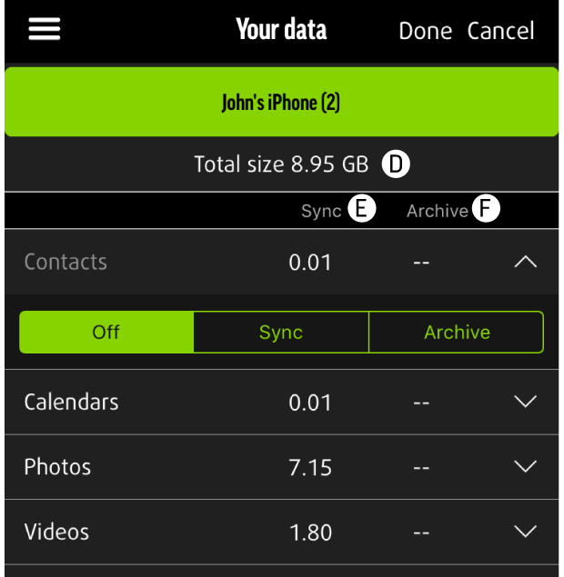

VOS DONNÉES

1.Sauvegarde de l'appareil branché (A)
La boîte verte en haut indique l'appareil auquel MEEM est actuellement branché. Si plusieurs appareils sont sauvegardés sur votre câble MEEM, cette boîte apparaîtra en haut à gauche.
2.Sauvegardes d'autres appareils (B et C)
La ou les boîtes bleues en haut de l'écran, à droite de la boîte verte, représentent les sauvegardes d'autres appareils présentes sur ce câble MEEM.
3.Taille totale (D)
Quantité totale des données synchronisées et archivées sur MEEM pour cet appareil.
4.Synchronisation (E)
Quantité de données synchronisées dans chaque catégorie entre MEEM et l'appareil.
5.Archive (F)
Quantité de données supprimées de l'appareil et archivées sur MEEM.
Dans chaque catégorie, Synchronisation et Archives apparaissent en haut de l'écran. Sélectionner le bouton Archive permet d'afficher uniquement les éléments qui ont été supprimés de l'appareil et sauvegardés sur MEEM.
Pour voir vos données sauvegardées, cliquez sur n'importe quelle catégorie dans le menu Vos données. Vous pourrez y voir tous les éléments qui ont été sauvegardés. Si vous avez sélectionné le mode Archive pour cette catégorie, vous pouvez également voir vos éléments archivés pour chaque catégorie en touchant le bouton Archive en haut de l'écran.
4.Mode Modifier
Sélectionnez Modifier pour changer les paramètres de sauvegarde. Pour changer les paramètres de sauvegarde, sélectionnez le bouton approprié (Désactivé, Synchronisation, ou Archive) sous chaque catégorie. Touchez Terminé pour finir la modification ou bien Annuler pour quitter sans sauvegarder les changements.